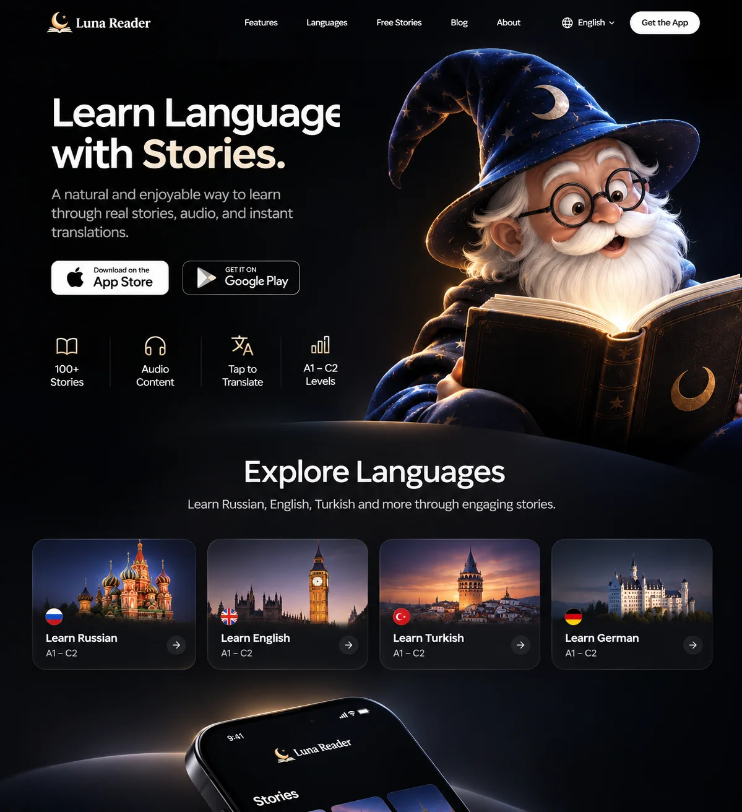

The little bookshop
Every morning, Anna walks past a small bookshop. Today, the door is open. Inside, she finds a story about a distant city. She sits by the window and begins to read.
Toca una palabra resaltada para descubrir su significado.
Descubre idiomas a través de historias, música y noticias. Lee, escucha y encuentra el significado de cada palabra.
Historias para
cada día
Contenido
en audio
Toca para
traducir
Aprende
a tu nivel

Aprende ruso, inglés, turco, alemán y español con historias que atrapan.
Lee · Escucha · Descubre
↗Lee · Escucha · Descubre
↗Lee · Escucha · Descubre
↗Lee · Escucha · Descubre
↗Lee · Escucha · Descubre
↗Sigue la historia, escucha el idioma y toca una palabra cuando necesites un poco de ayuda. Haz que la lectura forme parte de tu día a día.
Descubre el idioma en contexto, historia a historia.
Conecta las palabras de la página con su sonido.
Escucha música y traduce las letras sobre la marcha. Descubre qué significan las palabras de las canciones que te encantan.
“Every day, a new beginning.”
“Cada día, un nuevo comienzo.”
Una frase ilustrativa, no una captura de pantalla de la app.

Lee noticias en el idioma que estás aprendiendo. Haz que los temas que te importan formen parte de tu práctica diaria de lectura.
Una historia te conecta con un mundo nuevo. Las noticias te conectan con este.
Prueba una breve muestra de lectura. Selecciona una palabra resaltada para descubrir su significado.
Every morning, Anna walks past a small bookshop. Today, the door is open. Inside, she finds a story about a distant city. She sits by the window and begins to read.
Completa las palabras que faltan y forma frases a partir de las historias que lees en Luna Reader. Prueba aquí abajo dos ejemplos breves en ruso.
Анна ___ книгу.
Anna está leyendo un libro.
Анна читает книгу.
Ordena estas palabras para decir «Leo en casa».
домачитаюЯ
Я читаю дома.
Elige una historia corta y un momento fijo del día. Lee un poco, vuelve mañana y concéntrate en disfrutar de la historia más que en entender cada palabra.
Primero lee un pasaje; después escúchalo y síguelo con la vista. Vuelve a una frase que te haya gustado y dila en voz alta a tu ritmo.
Luna Reader reúne historias, audio y traducción de palabras para que explores un idioma a través de algo que disfrutas.
Luna Reader es una app para aprender idiomas en iOS y Android que gira en torno a la lectura. Lees y escuchas historias en el idioma que estás aprendiendo, tocas cualquier palabra para ver su significado y practicas las palabras que guardas.
Puedes leer en ruso, inglés, turco, alemán y español. La interfaz de la app y las traducciones de palabras están disponibles en más de 30 idiomas, así que puedes seguir cada texto con traducciones a tu propio idioma.
Luna Reader se descarga gratis e incluye historias gratuitas en todos los niveles. Luna Premium es una suscripción opcional, mensual o anual, para quienes quieren más.
Las historias están agrupadas por nivel, a partir de A1. Elige textos acordes con lo que ya puedes leer y sube de nivel cuando empiecen a resultarte cómodos.
Toca una palabra mientras lees para ver qué significa en tu idioma. Puedes guardar palabras y volver a ellas más tarde con tarjetas y ejercicios de completar espacios en blanco, formar frases y comprensión auditiva creados a partir de las historias que has leído.
Sí. Además de historias, puedes escuchar canciones mientras sigues la letra traducida y leer noticias en el idioma que estás aprendiendo.
Encuentra Luna Reader en el App Store y en Google Play.
Descarga gratuita. Hay funciones de pago y suscripciones opcionales.
Esta página usa cookies con fines de analítica y medición publicitaria. Política de privacidad
Ideas prácticas para leer, escuchar y descubrir palabras en contexto.
Escucha música y traduce letras de canciones con Luna Reader. Descubre una rutina de escucha sencilla que une palabras, significado y pronunciación.
Lee noticias en inglés con Luna Reader y crea un hábito de lectura diario y llevadero. Aprende a elegir un tema y a entender las palabras en contexto.
Explora historias en ruso con audio y toca cualquier palabra para traducirla en Luna Reader. Prueba una muestra de lectura original y una rutina práctica.
Lee historias en turco con audio en Luna Reader, toca cualquier palabra para ver su significado y practica con ejercicios creados a partir de lo que lees.
Lee historias en inglés con audio en Luna Reader, toca cualquier palabra para ver su significado y practica con ejercicios creados a partir de lo que lees.
Lee historias en alemán con audio en Luna Reader, toca cualquier palabra para ver su significado y practica con ejercicios creados a partir de lo que lees.
Lee historias en español con audio en Luna Reader, toca cualquier palabra para ver su significado y practica con ejercicios creados a partir de lo que lees.